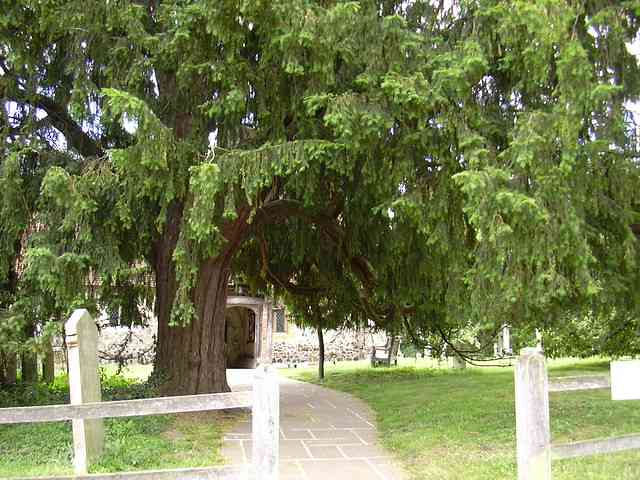

Big Taxus
By user: @Rivian
Created at: Aug 21, 2021 at 6:53 PM
ThreadId: 51515
#1
@Rivian
Aug 21, 2021 at 6:53 PM
This yew was dug from a hedge in May 2020. There were 3 others but I did not have the option of taking care of them and they perished in a field.
It was originally growing in clay, then when I got it it went into the ground in my garden. I put black flower soil around the root(stump)s.
As you can see the branches died back some. I removed bark from dead parts to get a better feel of whats going on.
First time Im dealing with live-veins.
A couple months ago I put it into this pot, mostly in flower soil cause thats what I had lying around. In hindsight I would choose better draining mix.
Cuts that were made:
-initial with chainsaw, turning it from hedge to a plant you have a chance transporting
-selected obviously bad branches and removed them
-where several twigs came from the same place, removed all but one
The roots underneath are the size of the branches but closer together and have highly compacted clay soil in between. Its bloody heavy.
c9bdf9.jpg
Best main trunk:
3eef85.jpg
Other main trunk:
2a9b56.jpg
Branches on soil level are rooted and alive:
b0aa8f.jpg
d61262.jpg
3499b9.jpg
Probably the only white root ive ever seen on this tree:
4432af.jpg
Ive never seen the real nebari because I cant afford to cut away any fine surface roots.
Ill probably repot again next year into inorganic soil to avoid grubs and have healthier roots.
The reason I havent done real wiring is because I dont know what exactly Ill use as primary structure
#2
@Hartinez
Aug 21, 2021 at 7:49 PM
This yew was dug from a hedge in May 2020. There were 3 others but I did not have the option of taking care of them and they perished in a field.
It was originally growing in clay, then when I got it it went into the ground in my garden. I put black flower soil around the root(stump)s.
As you can see the branches died back some. I removed bark from dead parts to get a better feel of whats going on.
First time Im dealing with live-veins.
A couple months ago I put it into this pot, mostly in flower soil cause thats what I had lying around. In hindsight I would choose better draining mix.
Cuts that were made:
-initial with chainsaw, turning it from hedge to a plant you have a chance transporting
-selected obviously bad branches and removed them
-where several twigs came from the same place, removed all but one
The roots underneath are the size of the branches but closer together and have highly compacted clay soil in between. Its bloody heavy.
View attachment 392949
Best main trunk:
View attachment 392950
Other main trunk:
View attachment 392951
Branches on soil level are rooted and alive:
View attachment 392952
View attachment 392953
View attachment 392954
Probably the only white root ive ever seen on this tree:
View attachment 392955
Ive never seen the real nebari because I cant afford to cut away any fine surface roots.
Ill probably repot again next year into inorganic soil to avoid grubs and have healthier roots.
The reason I havent done real wiring is because I dont know what exactly Ill use as primary structure
That is quite the tree. I’m ignorant to yew cultivation, but there is quite a lot of info out there. With proper care, timing and artistic eye this should be a great tree!
#3
@Rivian
Aug 21, 2021 at 7:56 PM
I have not developed a good artistic eye yet but Ive been inspired by Graham Potter to collect stumps like this
#4
@Hartinez
Aug 21, 2021 at 7:57 PM
@leatherback has a multi trunk urban dori yew. I’d imagine getting info from him, being in Germany also and all, would be a great idea.
@Arnold_K has some pretty spectacular yews also.
#5
@coh
Aug 21, 2021 at 8:06 PM
That is some nice material! Lots of possibilities. I also have trouble envisioning what to do with something like this. Using your first photo I can imagine a lower foliage mass/apex on the right trunk and one a bit higher on the left. But that left trunk looks kind of straight so maybe it would be sacrificed and carved, with the entire foliage mass then developed from the right trunk?
I'd probably take this to a workshop to get some other in-person opinions from more experienced people.
#6
@leatherback
Aug 21, 2021 at 8:19 PM
thats a good trun you have. if you get tired of watering it, let me know.
I prefer to get trees established in good substrate. styling and then loosing it on the transfer is not great. How much extension did you get this year on the branches?
#7
@Rivian
Aug 21, 2021 at 8:35 PM
thats a good trun you have. if you get tired of watering it, let me know.
I prefer to get trees established in good substrate. styling and then loosing it on the transfer is not great. How much extension did you get this year on the branches?
Weve had a wet summer and with the soil its in I had to water it maybe 5 times total
I would guess 20cm of growth, on a few branches more. Seemed fine in that regard
#8
@Colorado
Aug 21, 2021 at 9:50 PM
#9
@Shogun610
Aug 21, 2021 at 10:17 PM
That’s a big ass taxus , cool options for style and wood carving. Good luck!
#10
@just.wing.it
Aug 21, 2021 at 11:01 PM
Dang! Thats a big ol chunk of wood!
Very cool looking, good luck!
Shade shade shade!
#11
@leatherback
Nov 13, 2021 at 9:04 PM
Any update as to when I can pick this up ?
")
#12
@Rivian
Nov 13, 2021 at 9:29 PM
#13
@john blanch
Nov 13, 2021 at 9:37 PM
I was watching this today;
#14
@john blanch
Nov 13, 2021 at 9:38 PM
Fingers crossed he does updates ; )
#15
@Underdog
Nov 13, 2021 at 11:03 PM
I've a similar project going on too. I need to update the thread. I'll be following your progress. Happy growing
No but, I will thank you:) Like to get rid of the ugly anyway but have been tip toeing around this one.

www.bonsainut.com
#16
@Crazy Diamond
Nov 13, 2021 at 11:37 PM
What a freakin monster trunk, amazing tree!!
#17
@Koenye
Mar 17, 2022 at 3:53 PM
Amazing! Did it survive the winter?
#18
@Rivian
Apr 26, 2022 at 5:42 PM
Amazing! Did it survive the winter?
Yes it's alive, it's pushing buds right now and I took off a fair bit of foliage, hopefully not too much. I think most of the live veins are established now, sometimes I chip off some bark from the dead areas. Looks mostly the same overall.
#19
@Cajunrider
Apr 26, 2022 at 6:19 PM
Yes it's alive, it's pushing buds right now and I took off a fair bit of foliage, hopefully not too much. I think most of the live veins are established now, sometimes I chip off some bark from the dead areas. Looks mostly the same overall.
I've been looking toward to a picture update.
#20
@misfit11
Apr 26, 2022 at 7:06 PM
Fantastic material. I'm interested to see what you do with it.
#21
@Rivian
May 6, 2022 at 9:31 PM
#22
@Shogun610
May 6, 2022 at 9:56 PM
#23
@Rivian
May 8, 2022 at 8:16 PM
Messed with it a bit. Somewhat decided to focus on the right trunk cluster going forward
Attachments
#24
@Rivian
Jul 4, 2022 at 9:27 PM
I dont know what I can do about the underground half. All the 6cm diameter roots (and yew wood is hard) right next to each other with extremely compacted clay in between. No idea how to reduce that
#25
@leatherback
Jul 4, 2022 at 10:57 PM
Told you before. Send it to me
Big saw nearby?
#26
@BobbyLane
Jul 4, 2022 at 11:57 PM
you dont need to be an expert carver to take this forward. it helps but not essential, theres enough there to learn the basics on without destroying the tree.
but you can start by removing ones you dont like or dont quite fit, or have zero character. make uro from the removed stubs or jin them.
Graham potter has tons of yew videos i can already see one of his trees in this material.
creating uro n jin is fairly straight forward once you see how its done and copy what they did.
#27
@Rivian
Jul 5, 2022 at 12:26 PM
you dont need to be an expert carver to take this forward. it helps but not essential, theres enough there to learn the basics on without destroying the tree.
but you can start by removing ones you dont like or dont quite fit, or have zero character. make uro from the removed stubs or jin them.
Graham potter has tons of yew videos i can already see one of his trees in this material.
creating uro n jin is fairly straight forward once you see how its done and copy what they did.
Bobby, my problem are the roots, for the most part. Removing single roots is virtually impossible with normal tools. They block access to each other. And the bits of clay and possible stones in between make me not want to use a chainsaw.
I am thinking some huge biting instrument that can bite chunks out of it, like a root cutter or concave cutter but with 1m or so arms and more sturdy
#28
@BobbyLane
Jul 5, 2022 at 2:01 PM
while its in the pot, large loppers. when its out the pot and strong enough to take underground work, clean off all the muck and use a reciprocating saw with various size blades and loppers.
#29
@Rivian
Jul 24, 2022 at 8:50 AM
#30
@Ugo
Jul 24, 2022 at 9:32 AM
Hi!
Great material you have there!
Good work taking it out plus the extra care for it to survive!!
I think this primary wiring / styling was a little bit too early as I personally would have corrected only the structural flaws and waited but the wiring you just did will guide the first and secondary scafolding, good job.
Can't wait to see future wood work on this big guy!
#31
@BobbyLane
Aug 15, 2022 at 6:39 PM
Thought you might like this
#32
@Rivian
Aug 15, 2022 at 8:32 PM
idk, seems off somehow. Wish he would have finished work on it
#33
@BobbyLane
Aug 15, 2022 at 9:28 PM
look out for the follow up vid in Oct
#34
@BobbyLane
Sep 3, 2022 at 9:18 PM
There was a guy on FB/IG Marco,
he posted this epic Yew, 3 years from collection, but its the powerful jins that reminded me about your tree, yours might benefit from some work like this.
really impressive jin work, cant stop looking at this tree
Attachments
#35
@Rivian
Sep 3, 2022 at 10:46 PM
Still waiting on the Kaizen tools, especially extra large root cutter. Its producing new shoots now
#36
@BobbyLane
Sep 3, 2022 at 10:57 PM
Its going to be a lot of fun, im jealous!
#37
@DavidBoren
Sep 4, 2022 at 2:04 AM
Awesome tree.
I like what you have done thusfar. I think I would get it in good substrate [in the same pot], and leave it alone for about a year [other than eventually removing the wiring]... probably do the lime-sulfur thing to any deadwood you want to keep.
When it has better radial roots, you can think about cutting away those huge roots you are worried about... cut them off even, and screw it to a board. Put it back in good substrate for another year or five. Get it as healthy as possible, rather than focusing on any form.
This beast should be carved, and it needs to be healthy to carve it.
#38
@Rivian
Sep 9, 2022 at 9:22 PM
@BobbyLane Have you seen this tree at the start here (not the thumbnail)? Awesome trunk. Similar style to Graham Potter. I prefer this to Harry Harringtons
#39
@BobbyLane
Sep 9, 2022 at 9:47 PM
@BobbyLane Have you seen this tree at the start here (not the thumbnail)? Awesome trunk. Similar style to Graham Potter. I prefer this to Harry Harringtons
Cool! I only posted the Harry one because of the carving really and it was more recent, but I guess you can see more in Potters videos where he goes more in depth. I like Tony's yews, he doesnt work on much stumps though.
Here's a bit of Yew inspiration
also, have you thought about how you'll style this one going forwards? are you more going for the original 'conifer' look with all the branches going horizontal all the way to the crown, or maybe, just my suggestion, I think ascending branching would suit the tree. many yews in nature actually are 'broomy' they have many low branches that sag and also a lot of upward and out branches as you go higher up the tree. thats what im doing with one I have, ascending branches as you go up. I think it would suit the roundish shape yours already has and it will also appear more natural. sometimes when you bend really thick branches downwards it doesnt look completely natural to me, Yews in nature while having saggy branches they also have large subtrunks that rise, then you want the more flexible ones coming off to do the bend downwards, rather than making thick branches curve if you know what i mean. guide wire on thick bits may give you a more natural curve tho, on thick bits. straight sections of branch on yew can be hidden with foliage also.
But you started well, just making suggestions going forward
Looking up!4a83fa.jpeg
by
Hitman, on Flickr
Ormiston Yew Treeb2eba2.jpeg
by
Raycce, on Flickr
Taxus baccata - Yew tree in Pyrford Churchyardfe5b16.jpeg
by
Ashley Wood, on Flickr
ancient yew Taxus baccata485620.jpeg
by
Eloy Revilla, on Flickr
you can see in some of these where heavy branches rise upwards and taper off and the thinner branches then dip. but on bonsai, everyone does the bend from the base, if you see what i mean.
#40
@BobbyLane
Sep 9, 2022 at 10:09 PM
some yew trees do have heavy branches bending from the base, but its about working out which of your branches look better doing it this way or that way.
I did this one with some ascending branching higher in the tree
41adf7.jpg
#41
@BobbyLane
Sep 9, 2022 at 10:34 PM
I have this in my favs, i like how he's styled this, it looks pretty natural to me with the up, down curves. this is how some yew branches look in the wild, the bends are subtle and not contrived.
Dont understand a word of German, but images speak a thousand words!
#42
@Rivian
Sep 9, 2022 at 10:35 PM
Just growing branches in many places right now and deciding later. Its not exactly dense right now so I might wait till next year for repotting.
But I might get another big (but less interesting) taxus in October to post about
#43
@BobbyLane
Sep 9, 2022 at 10:40 PM
Just growing branches in many places right now and deciding later. Its not exactly dense right now so I might wait till next year for repotting.
But I might get another big (but less interesting) taxus in October to post about
I might follow Potters lead and repot my recent one at the end of next July. that will give it a whole summer to back bud on the old wood. main thing now is keeping it much drier than my other trees while it sits in nursery soil. will be kept undercover all winter. seems healthy tho, its been back budding for the last few weeks hence me starting wire on it.
#44
@Rivian
Sep 9, 2022 at 10:49 PM
Yeah I think I will cover mine too because its horribly wet weather and the soil isnt ideal.
You asked about wiring style, I think the video you posted has pretty weird wiring at the top at least
#45
@BobbyLane
Sep 9, 2022 at 10:51 PM
Yeah I think I will cover mine too because its horribly wet weather and the soil isnt ideal.
You asked about wiring style, I think the video you posted has pretty weird wiring at the top at least
his wiring is how many yew branches look, but while i like his styling, i dont think he should of carried it into the crown, i feel he should of went with some ascending branches up in the crown.
#46
@Rivian
Sep 10, 2022 at 6:39 PM
I got the second package from Kaizen today and after testing the extra large bonsai root cutter Im confident it can do the trick. Dug into the soil a bit and found some live and some rotting wood/ roots. Will repot tomorrow unless its too wet
#47
@BobbyLane
Sep 10, 2022 at 7:13 PM
I think its too soon to repot yours, since you did some styling only a few weeks ago.
A wise man once said: Dont do top n bottom in the same season...in regards to taxus
#48
@Rivian
Sep 10, 2022 at 7:20 PM
I'll be conservative. There are large areas without roots where I can just exchange the soil, and a couple long dead roots I can take out
#49
@BobbyLane
Sep 10, 2022 at 7:24 PM
its risky, but if you must, i wouldnt reduce any live live roots to get it in something smaller. I wouldnt cut any live roots at all.
#50
@Rivian
Sep 11, 2022 at 11:30 AM
Good morning. Sunday morning.
Did some work on it
I removed 2 buckets of potting soil and clay from the surface and down the sides, sawed off the large dead branch at surface level and washed off the new surface with a hose.
Theres almost 10cm of trunk below what you saw so far before the best nebari. Changes its character away from the dual trunk it looked like until now. Sad!
Almost no cuts were made. Decent amount of white roots, they were damaged a bit in the washing but there should be no major issues.
Replaced soil with better mix up to the previous level
Next pic when growth extends
#51
@Rivian
Sep 13, 2022 at 8:13 PM
Possibly can get one or two more where this one came from. Have to check which if any are good and then see about permission. Nebari would be luck.
On a related note, I am curious what people think the one I have now might be worth? Judging by what you saw so far. Then I can get an idea of what would be reasonable to buy the raw material.
Im not going to sell this one for any remotely reasonable price, but if I get more and they turn out decent but Im not super fond of them, then I might sell those on ebay or something.
#52
@BobbyLane
Sep 13, 2022 at 9:44 PM
Tricky to say how much, without seeing the whole tree and base. also tricky without a sense of scale and a measurment of the base. I sold this for £455 after its first styling, your yew is more raw currently with no work done on the stumps or chops, only a bonsai person who can carve will buy it. Things to consider when selling raw stock and price ranges. the privet here is styled from front, back, sides and has had its roots reduced to a good bonsai size and is ready for a nice pot.
between £450-650 its not very dense foliage wise maybe thats even too much? I can see its a very large, bulky tree, my first thought was £455
Attachments
#53
@Rivian
Sep 13, 2022 at 9:54 PM
Thank you for your input Bobby! At least gives me a rough sense of ballpark.
I know you are styling a yew currently, what do you think you can get for it eventually? Will you look to sell it next year already?
#54
@BobbyLane
Sep 13, 2022 at 9:58 PM
Thank you for your input Bobby! At least gives me a rough sense of ballpark.
I know you are styling a yew currently, what do you think you can get for it eventually? Will you look to sell it next year already?
I really like my recent Yew and have no plan to sell, but it could fetch £350 once it backbuds, the wire is off and reduced to a smaller container with bonsai soil.
#55
@thebonsaiproject
Sep 13, 2022 at 10:59 PM
What a monster! Bit of a challenge getting it out?
#56
@Rivian
Sep 13, 2022 at 11:55 PM
What a monster! Bit of a challenge getting it out?
Out of the ground? 4 hours and had to get someone to help me actually lift it in the end after it was loose.
If you mean the "repot", I didnt take it out. Just did what I could without doing so.
#57
@Rivian
Sep 17, 2022 at 3:41 PM
Just got permission, if the weather is right will dig up another taxus tomorrow
#58
@Rivian
Sep 19, 2022 at 5:23 PM
New one. Was a bit harsher with the roots so dont know if it will survive.
d55ce8.jpg
Reminded me of this video. Theres a progression at the end. Barely used any of the initial stump though, which I will attempt to do.
His nebari was better than mine is, for sure.
#59
@BobbyLane
Sep 19, 2022 at 6:06 PM
New one. Was a bit harsher with the roots so dont know if it will survive.
View attachment 456146
Reminded me of this video. Theres a progression at the end. Barely used any of the initial stump though, which I will attempt to do.
His nebari was better than mine is, for sure.
yeh I think Potters one would of been originally collected because of its base.
Why was you harsher with the roots, was it a tough dig? happens I guess, ive been there myself, in my case the Yew was in between a fence and a wall which made it very difficult to get any force going.
#60
@Rivian
Sep 19, 2022 at 6:23 PM
yeh I think Potters one would of been originally collected because of its base.
Why was you harsher with the roots, was it a tough dig? happens I guess, ive been there myself, but the Yew inbetween a fence and a wall which made it very difficult to get any force going.
Just happened that way. I guess last time there were low branches preventing me. But it gets a lot more difficult with bigger rootball so I try to keep it small.
I'll cut off either the right or left trunk eventually, and keep some of the middle for taper. One idea was to remove the right trunk and carving even further into the rest to remove the 2-dimensional aspect
#61
@BobbyLane
Sep 20, 2022 at 7:45 PM
pretty amazing transformation, considering the starting material. sometimes its hard to see anything in raw material, but when you see what others do, things can become clearer.
multiple straight trunks, but i guess its the movement which made this possible, still inspiring tho. the deadwood work has also completely transformed the material...
abe02d.jpg
#62
@Rivian
Sep 20, 2022 at 7:53 PM
Have you found you can create live veins at all? I mean one with some movement, not straight to the roots. It would go against current major sap flow Im sure. Dont know if the tree could adapt or it just ends in death of everything above. I heard pines and junipers "have the ability to transfer sap sideways" in this context, but yews, no idea
#63
@BobbyLane
Sep 20, 2022 at 8:00 PM
Have you found you can create live veins at all? I mean one with some movement, not straight to the roots. It would go against current major sap flow Im sure. Dont know if the tree could adapt or it just ends in death of everything above. I heard pines and junipers "have the ability to transfer sap sideways" in this context, but yews, no idea
Not really gone deep into that no, I just go by feel and I look closely at the position of roots and whats above them, if im making cuts or doing deadwood ill look for contours and ridges on the trunk where I feel there might be a lot of sap flow and be mindful of that. I know Will baddely talks about following the grain a lot, so I try to do that
#64
@Rivian
Sep 20, 2022 at 8:18 PM
I have 2 ideas in this regard. Either fuse a young branch onto the bark and let it become the twisted section of the live vein
Or if you create a shari in the form of a slanted eye but vertically, and then widen it over some time so the flow can adapt a bit at a time
If it doesnt work the direct way
#65
@leatherback
Sep 20, 2022 at 10:21 PM
Have you found you can create live veins at all?
yes one can
#66
@Rivian
Sep 26, 2022 at 8:58 PM
The first taxus got stuck in the stage of flushing out it was in when I repotted. It would be good if it can finish or even harden the shoots as they are. I will use some rhizotonic and see if that helps
#67
@BobbyLane
Sep 26, 2022 at 9:09 PM
I doubt it will help, just means more watering at a time of year when it should be kept dry. been there done that,, killed many.
#68
@Rivian
May 17, 2023 at 9:00 PM
Both of these taxus survived and I found another one just as big, barerooted on a trashpile. It too survived.
All pushing buds now
About the rhizotonic, I didnt notice any effect
The shoots did harden in the early stages and now have new shoots extending from them
Think Im gonna fertilize them heavily now
#69
@Jcmmaple
May 17, 2023 at 11:41 PM
Awesome material, I wanted to try some yews but I read they were poisonous.
#70
@leatherback
May 18, 2023 at 7:58 AM
Awesome material, I wanted to try some yews but I read they were poisonous.
Just do not eat them, wash your hands after working and you will probably be fine.
I do get a little dizzy if I work a whole day on my yews, especially when pulling the leaves.
#71
@Rivian
Jun 17, 2023 at 9:15 PM
Drastic repot done, 90% roots removed, no more clay soil, lowered nebari, same pot, no foliage cut, placed in morning sun.
Should be clear if it survives by July
#72
@circledisk
Apr 1, 2024 at 5:49 PM
Just do not eat them, wash your hands after working and you will probably be fine.
I do get a little dizzy if I work a whole day on my yews, especially when pulling the leaves.
was just working on a yew last night and felt a bit nausous going to bed...no wonder, I forgot to wash my hands right after working!
#73
@Rivian
Nov 1, 2024 at 6:37 PM
Peter-chan to Jelle: These go for 2-5K
Me: I should go water my yew.

#74
@Meeyageesun
Nov 1, 2024 at 7:48 PM
This yew was dug from a hedge in May 2020. There were 3 others but I did not have the option of taking care of them and they perished in a field.
It was originally growing in clay, then when I got it it went into the ground in my garden. I put black flower soil around the root(stump)s.
As you can see the branches died back some. I removed bark from dead parts to get a better feel of whats going on.
First time Im dealing with live-veins.
A couple months ago I put it into this pot, mostly in flower soil cause thats what I had lying around. In hindsight I would choose better draining mix.
Cuts that were made:
-initial with chainsaw, turning it from hedge to a plant you have a chance transporting
-selected obviously bad branches and removed them
-where several twigs came from the same place, removed all but one
The roots underneath are the size of the branches but closer together and have highly compacted clay soil in between. Its bloody heavy.
View attachment 392949
Best main trunk:
View attachment 392950
Other main trunk:
View attachment 392951
Branches on soil level are rooted and alive:
View attachment 392952
View attachment 392953
View attachment 392954
Probably the only white root ive ever seen on this tree:
View attachment 392955
Ive never seen the real nebari because I cant afford to cut away any fine surface roots.
Ill probably repot again next year into inorganic soil to avoid grubs and have healthier roots.
The reason I havent done real wiring is because I dont know what exactly Ill use as primary structure
I really think your taxus has a ton of potential. So many options for sure. I recently was able to dig up two weeping taxus myself, btw ,my first time working with the taxus. Both were thriving in gritty clay with minimal organic matter , pretty dry in my opinion , so I potted them in a better version of what it was growing in. It’s been probably 8 months since I dug them up and everything seems ok, no dieback so far.
Attachments


{kind=link}
{kind=link}
{kind=link}
{kind=link}
{kind=link}
{kind=link}
{kind=link}
{kind=link}
{kind=link}
{kind=link}
{kind=link}
{kind=link}
{kind=link}
{kind=link}
{kind=link}
{kind=link}
{kind=link}
{kind=link}
{kind=link}
{kind=link}
{kind=link}
{kind=link}
{kind=link}
{kind=link}
{kind=link}
{kind=link}
{kind=link}